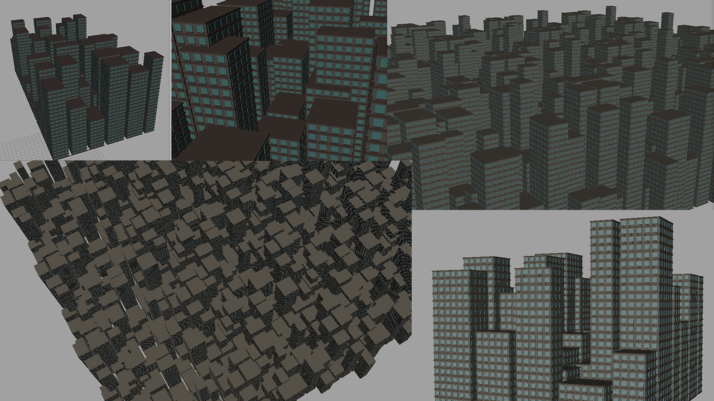
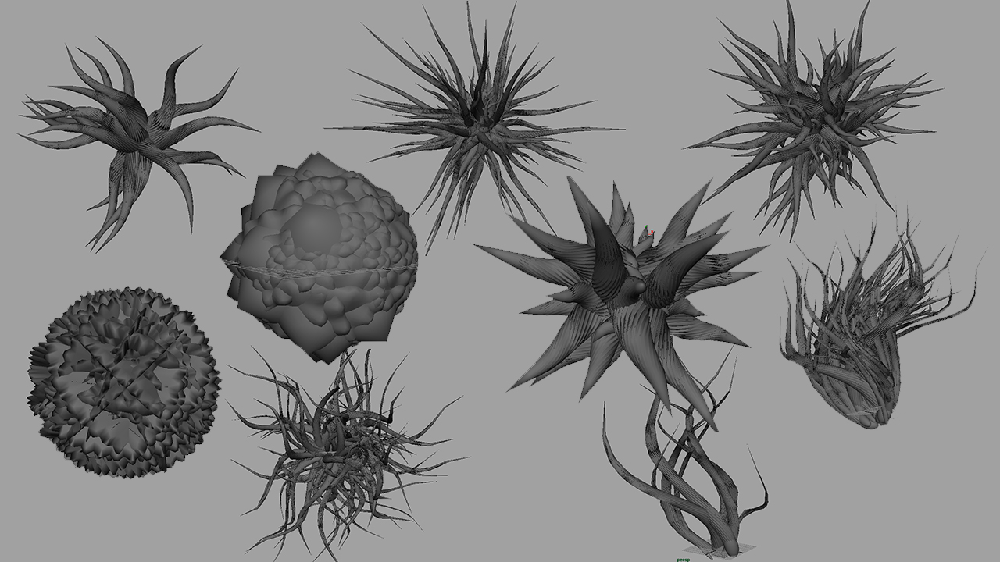

DAVE YAN
Resume
About
Procedural Experiments
Procedural modeling and animation in Maya
Spring 2016
Procedural Cities
TODO

Rapidly generate huge blocks of random cities
Morphing Organic Shapes
TODO
The shape changes drastically over time
Procedural Tentacle Variations
TODO

Many types of tentacles from just varying a few parameters
Animated Tentacles
TODO
The tentacles are moving!